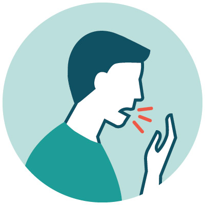
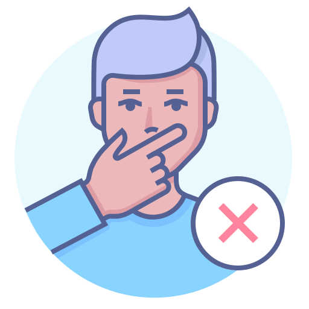
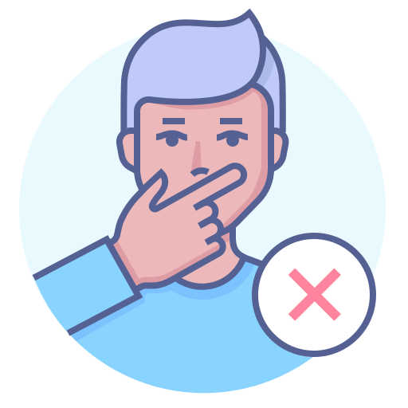
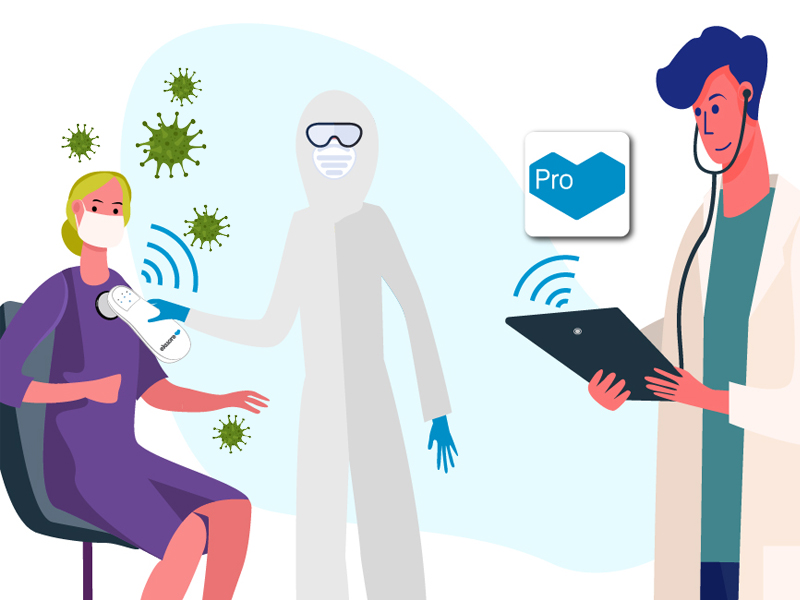

Coronavirus Ecuador
CULSULTA MEMORIAL
PROTOCOLOS Y MANUALES
DATOS ABIERTOS
¿Qué es el coronavirus?
Los coronavirus son una familia de virus que causan enfermedades (desde el resfriado común hasta enfermedades respiratorias más graves) y circulan entre humanos y animales.
En este caso, se trata del SARS-COV2. Apareció en China en diciembre pasado y provoca una enfermedad llamada COVID-19, que se extendió por el mundo y fue declarada pandemia global por la Organización Mundial de la Salud.
¿Cómo se transmite?
Los coronavirus humanos se transmiten de una persona infectada a otras:
*a través de las gotículas que expulsa un enfermo al toser y estornudar
*al tocar o estrechar la mano de una persona enferma,
*un objeto o superficie contaminada con el virus y luego llevarse las manos sucias a boca, nariz u ojos

 

1)Evita saludar de mano, beso o abrazo
2)Evita automedicarte
3)Evita escupir
4) Evita tocarte la cara con las manos sucias
Tratamiento
No existe medicamento que cure los coronavirus, solo para aliviar los síntomas que generan.
El virus que causa COVID-19 es muy nuevo, y no hay vacuna.
En la mayor parte de los casos, la enfermedad no es grave y el cuerpo la controla en alrededor de dos semanas.
Si presentas síntomas compatibles con COVID-19 y tienes dificultad para respirar o perteneces a uno de los grupos de riesgo; entonces cúbrete boca y nariz con un tapabocas, una bufanda o un pañuelo y acude de inmediato al médico o a la clínica más cercana.
Si no presentas síntomas, quédate en casa.
Y recuerda: no debes automedicarte.

Cuidados para el enfermo
Si tienes síntomas compatibles con coronavirus y no tienes dificultad para respirar o perteneces a uno de los grupos de riesgo, no vayas al doctor. Solo quédate en casa y haz lo siguiente:
-No te automediques.
-No saludes de mano, beso o abrazo y mantén tu sana distancia respecto a quienes conviven contigo.
-Lávate las manos frecuentemente con agua y jabón, al menos 20 segundos, o desinféctalas con gel.
-Aliméntate sanamente, con verduras y frutas y toma al menos ocho vasos de agua simple.
-Laven vasos y cubiertos con agua, jabón y cloro.
